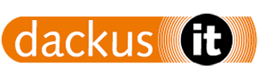
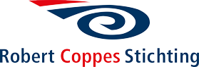

Betaalapp
Bij Dackus.IT moest er een applicatie gebouwd worden waarmee users snel betalingen kunnen uitvoeren.
Door scannen van een gegenereerde QR-code die als betaalverzoek dient kunnen gebruikers onderling
betalingen voldoen.
Ik werkte hier vooral als developer en was verantwoordelijk voor het ontwerpen, programmeren en use-
case testen van de applicatie.
In samenwerking met de opdrachtgever is er een ontwerp gemaakt van de applicatie in Adobe XD. Deze is
vervolgens in Ionic Angular geprogrammeerd en gekoppeld aan een backend API m.b.v. Laravel voor het
genereren van de QR-code. Voor de applicatie zijn tevens use-case testen uitgevoerd.
Met deze app kunnen klaten snel, gemakkelijk en contactloos betalingen voldoen.
Voor de Robert Coppes stichting moest er in samenwerking met Hogegschool Zuyd een Applicatie
ontwikkeld worden die het voor slechtziende mensen mogelijk maakt een goede kledingkeuze te maken.
Hierbij moet er gedacht worden aan bruikbare navigatie in de app voor slechtzienden.
Ik werkte hier als developer en was verantwoordelijk voor het ontwerpen van de UI en het programmeren
van delen van de applicatie. Het programmeren gebeurde in HTML, CSS en javascript met behulp van Ionic
Angular.
Ik heb samen met mijn team een ontwerp gemaakt voor een UI in Adobe XD dat te gebruiken is voor
slechtziende mensen. Hierbij is er gedacht aan hoog contrast, grote knoppen en spraakbesturing.
Door het gebruiken van deze app kunnen slechtzienden nu een bewuste kledingkeuze maken, ook wanneer
zij zelf niet zien hoe de kledingstukken eruit zien.
Kledingkast voor slechtzienden
 Toepassing van Testautomatisering bij Universiteit Maastricht
Toepassing van Testautomatisering bij Universiteit Maastricht
Universiteit Maastricht heeft veel systemen in verschillende omgevingen. Bij dit project was de vraag of het
mogelijk is om bij verschillende systemen testautomatisering toe te passen en welke voordelen dit zou
bieden.
Mijn werk bestond uit het interviewen van verschillende projectteams naar de huidige testprocessen.
Op basis hiervan is onderzocht of er situaties zijn waar het "normale" testen vervangen kan worden door
testautomatisering.
Ik heb op basis van het onderzoek een testproces opgesteld waarbij het verschil tussen "normaal" testen en geautomatiseerd testen getoond wordt.
Ook is er een advies opgesteld voor de teams, waarmee zij de beslissing kunnen nemen of zij wel of niet testautomatisering willen toepassen.
Voor het lectoraat van Hogeschool Zuyd moest er een applicatie gemaakt worden die d.m.v. motion
detection kon bepalen of fysiotherapie patiënten bepaalde oefeningen goed uitvoeren. Het moest hierbij
mogelijk zijn dit in een thuissituatie te doen, zodat de patiënt niet genoodzaakt is om naar de praktijk te
komen.
Mijn rol in dit project was het ombouwen van een Google motion detection API (Tensorflow). Het was hierbij
nodig om het neurale netwerk opnieuw te trainen, zodat het de houdingen van patiënten kan registreren.
Vervolgens zijn er testen ingebouwd om te checken of de houding die de patiënt doet, ook voldoet aan de
gestelde eisen. Hierbij moest gelet worden op performance van de motion detectie, zodat patiënten geen
high-end computer nodig hebben om dit thuis te kunnen gebruiken.
Uiteindelijk is het gelukt om op krachtige laptops de tool werkend te krijgen, maar de performance op
gemiddelde laptops was nog te laag om het daadwerkelijk in te zetten. Hiervoor moet de software beter
geoptimaliseerd worden of gekeken worden naar een andere API voor motion detection.